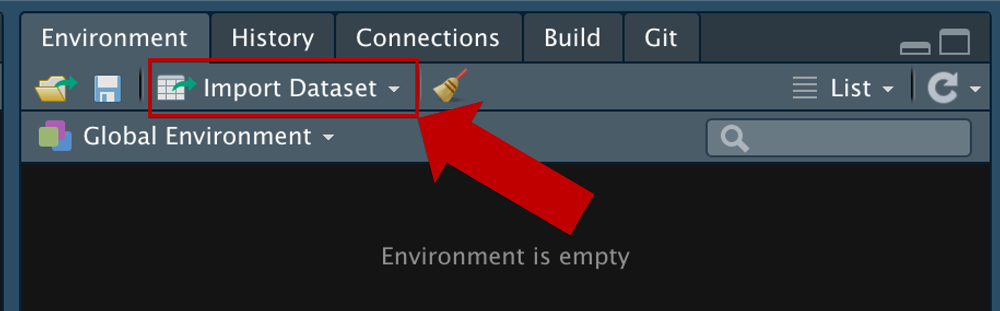
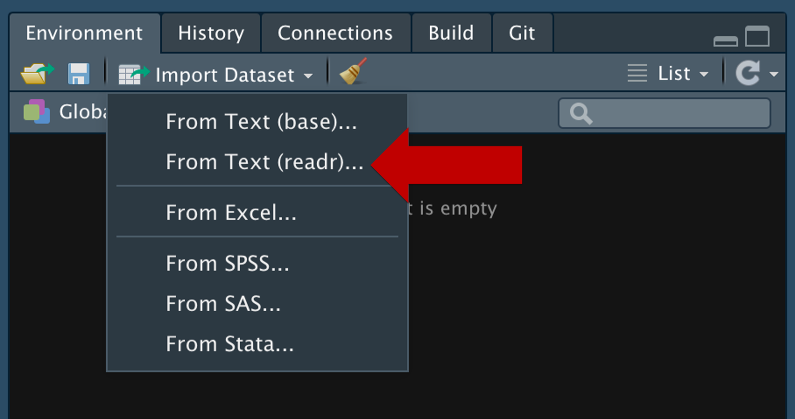
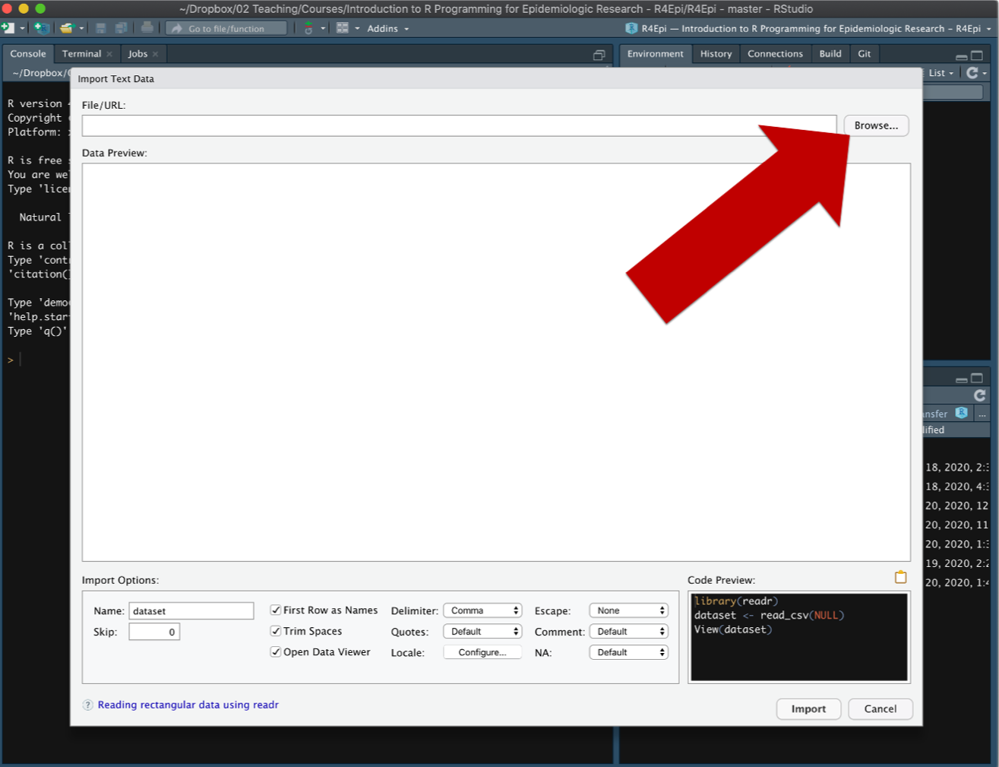
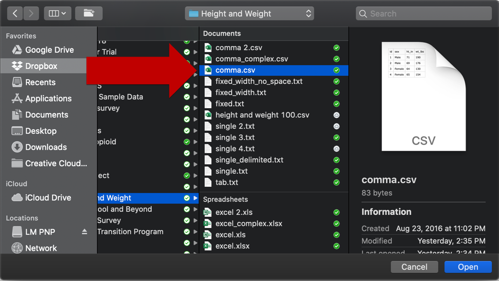
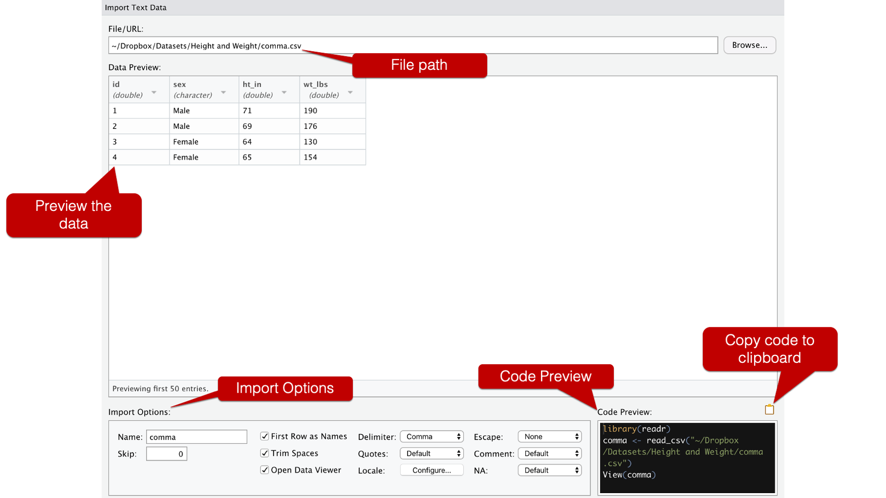
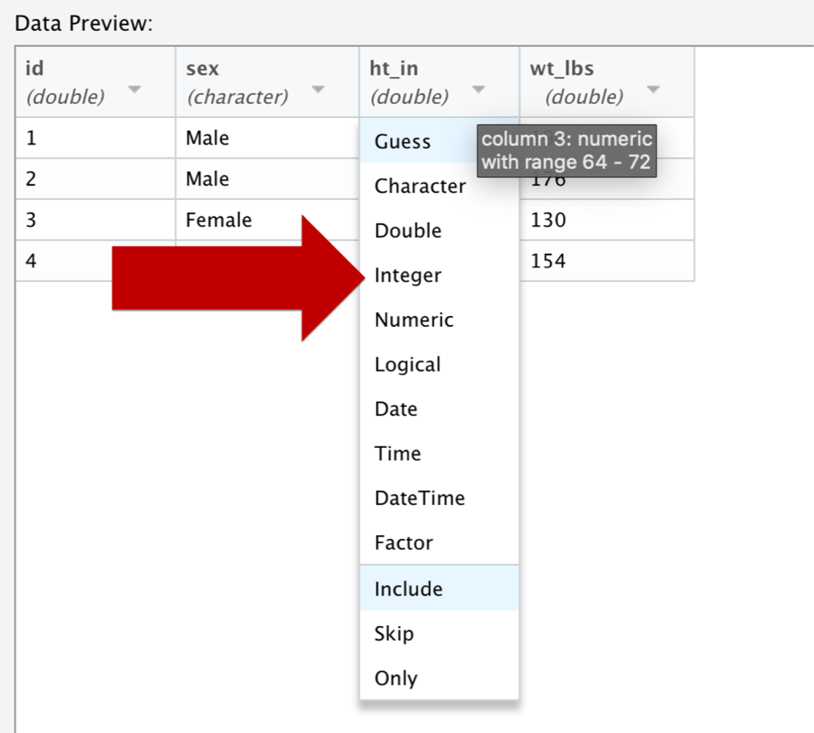
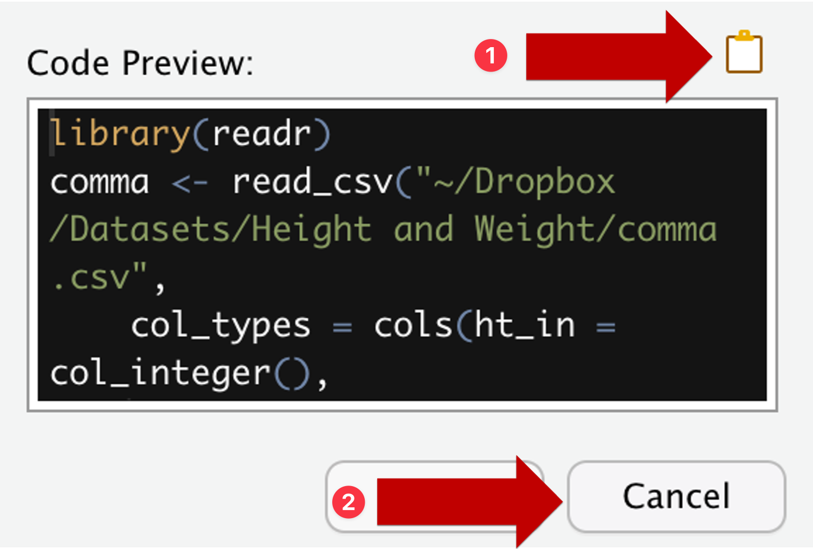

# A tibble: 4 × 4
id sex ht_in wt_lbs
<dbl> <chr> <int> <int>
1 1 Male 71 190
2 2 Male 69 176
3 3 Female 64 130
4 4 Female 65 1544 Import Data from Local Files
 In this session, you will lean how to import data from local files.
In this session, you will lean how to import data from local files.
In business analytics, when you have a dataset and you want to analyze it in R. The first step is to import the data into R. You can use the command read.csv(), but you need to specify the correct path to your data file. This can be tricky if you are not familiar with file paths and directories.
An easier alternative is to use RStudio’s Import Dataset tool, which provides a graphical interface to select your data file and automatically generates the code to import it. This is especially useful for those who are new to R or prefer a visual approach.
Up to now you have loaded data by writing read_csv() yourself. RStudio also ships with a point-and-click Import Dataset tool that writes that line of code for you.
We will use a small example dataset to illustrate the process. The dataset is a CSV file with four rows of heights and weights. You may click HERE to download this file to your compter.
comma.csv data preview:
It contains four rows of heights and weights.
| id | sex | ht_in | wt_lbs |
|---|---|---|---|
| 1 | Male | 71 | 190 |
| 2 | Male | 69 | 176 |
| 3 | Female | 64 | 130 |
| 4 | Female | 65 | 154 |
4.1 Environment setup
The “From Text (readr)” option uses the readr package, so readr has to be installed.
If you already have the tidyverse, you are done. readr is one of the core tidyverse packages, so installing tidyverse installed readr along with it — there is nothing extra to do. That is the case if you followed Environment Setup.
Otherwise, run in the RStudio Console:
install.packages("readr")4.2 Import a CSV step by step
In the Environment pane, click “Import Dataset”.

Choose “From Text (readr)”.

The two text options differ in which code they write for you. “From Text (readr)” uses
read_csv()from thereadrpackage (part of thetidyverse), and “From Text (base)” uses base R’sread.csv(). This course usesreadrthroughout, so pick that one.The Import Text Data window opens. Click “Browse…” to find your file.

Your operating system’s file explorer opens. Select the file you want — here,
comma.csv.
The window now fills in. Four areas are worth reading before you do anything else.

- File/URL — the path to the file you picked.
- Data Preview — how R is currently parsing the file, with the type R has guessed under each column name. Check this: if a column you expect to be numeric shows up as
character, something in the file is not what you think it is. - Import Options — the name the object will get, whether the first row holds the column names, the delimiter, how missing values are written, and so on.
- Code Preview — the code that produces exactly the import you have configured. Every change you make above rewrites this box.
Optional: You can change a column type by clicking the small arrow in its column header and choosing from the dropdown. Here
ht_inandwt_lbsare being changed fromdoubletointeger, since heights and weights in this file are whole numbers.
The same menu has
Factor,DateandSkip, which saves you a separate cleaning step later. Watch the Code Preview box as you do this: acol_typesargument appears.Important step: Do NOT press the “Import” button. Click the clipboard icon above the Code Preview box to copy the code, then press “Cancel”. This makes your import reproducible. You can re-run the same code again later.
CautionWhy copy the code instead of clicking Import?If you click “Import”, RStudio will load the data for your current session only. If you want to import the data again, you will have to go through the import dialog again. This is NOT reproducible, and hence not a good practice.

Final Step: Go back to your R script or Quarto document and paste. Run the pasted code as though you had typed it yourself.
4.3 The code you end up with
Pasting gives you something close to this:
library(readr)
comma <- read_csv(
"~/Dropbox/Datasets/Height and Weight/comma.csv",
col_types = cols(ht_in = col_integer(),
wt_lbs = col_integer())
)
View(comma)Note:
- Path will be specific to your computer and your file location.
- Drop
View(comma). It opens the data viewer, which is handy once but does nothing useful inside a script or a rendered document.
That leaves:
library(readr)
comma <- read_csv(
"~/Dropbox/Datasets/Height and Weight/comma.csv",
col_types = cols(ht_in = col_integer(),
wt_lbs = col_integer())
)
commaNote what col_types bought us: ht_in and wt_lbs come in as <int> rather than <dbl>, exactly as chosen in the dialog.
4.4 Exercise
Use the “Import Dataset” tool to load CASchools_test_score.csv, the dataset used later in the course. Download it from HERE.
- Open the file through Import Dataset → From Text (readr).
- In the Data Preview, set
countyandgradesto typeFactor. - Copy the code, cancel the dialog, and paste it into a script.
- Run
str()on the result and check thatcountyandgradesare factors.
Further readings:
RSutdio User Guide: Local Data
You may find “Importing data from Excel files” in this guide.